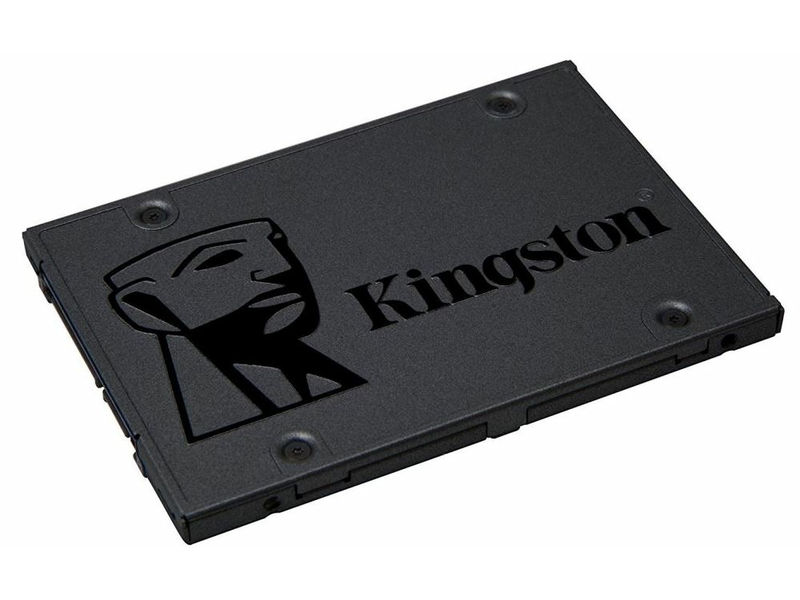
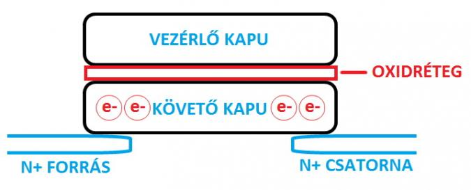
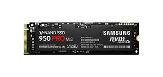

Működési elve
Az SSD-k két legfontosabb alkotóeleme a (NAND) flash chip illetve a vezérlőelektronika. Előbbi az adattárolásért felel (normál HDD-k esetén ezt a feladatot az adattároló tányérok látják el), utóbbi pedig az írási/olvasási műveleteket végzi, amely sokkal komplexebb feladat, mint egy normál HDD esetében – hogy miért, az rögtön kiderül.
A NAND flash chipek működési elvét nem kell mélyebben megértenünk, az alapismeretek azonban fontosak. A NAND chipek belső szerkezete rácsos felépítésű, s a rácspontok jelentik a biteket. Minden rácspont egy tranzisztort tartalmaz, amelyben egy vezérlő és egy követő kapu található. A követő kapu töltöttségi szintje egyben meghatározza a vezetőképességét is. Ha az elektronika feszültséget közöl a vezérlőkapuval, akkor az elektronágyúként viselkedik, és az elektronok átvándorolnak a követőkapuba (növelve annak feszültségét). A kapuk között egy vékony oxidréteg húzódik, amelynek szerepe az, hogy az így kialakult töltést megtartsa a követőkapuban akkor is, amikor a vezérlőkapu már nincs feszültség alatt.

Fajtái:
Három fő fajtája létezik:
SLC (single-level cell)
Cellánként egy bit adatot tud eltárolni ezért gyorsabb is, mivel a bit helye gyorsabban megálapítható. Az SLC tipusú SSD-nek
ezért hosszabb is az élettartama. mert a cellák kevésbé használódnak írás-olvasás közben. Általában ezek a fajta tárolók hozzávetőleg 100 000 írási ciklus
élettartamúak.
MLC (multi-level cell)
cellánként kettő bitet tárol, a
TLC (triple-level cell)
cellánként pedig három bitet tárol. Ezért ezeknek a
tárolóegységeknek rövidebb az élettartama a(z) SLC tipusú-hoz képest, mert az írási-olvasási műveletek gyakoribbak az adott
cellán, ezért a tárolóegység jobban használódik, "fárad" (Wear Level jelenség). AZ előbbi 3000, az utóbbipedig csak körlbelül
1000 írási ciklust "bír ki". Ezért a vezérlő chip nyilvántartja a blokk állapotát és az írási folyamat során egyenletesen terheli a
blokkokat. Tehát a vezérlő mesterségese töredezetté teszi a blokkokat.
Ezért soha nem szabad az SSD esetében használni a töredezettségmentesítést!
De vannak még
DRAM SSD
Tápellátást igénylő (annak megszűnése esetén törlődő) memóriaelemeket tartalmazó tömbökből épül fel, mint például a számítógépek központi memóriája.
Ez rendkívül gyors írást, olvasást és keresést biztosít. Nagy adatbázisok és grafikus alkalmazások sebességének növelésére használják. Ezek a meghajtók
akkumulátorral rendelkeznek az adatvesztés megakadályozására, a drágább modelleket mentőlemezzel is ellátják, az áramkimaradás esetén fellépő adatvesztés kivédésére.
Előnyük a gyorsaság és az egyszerű felépítés. Hátrányuk a magas ár – 80-800 USD/gigabájt –, valamint a nagy energiafelvétel, magas fogyasztás és ennek következtében a melegedés. Felhasználásuk ipari és katonai téren jelentős.
Flash SSD
A nem felejtő memórián alapuló SSD-k (NAND SSD) a 2000-es évek második felében terjedtek el, az alacsonyabb ár miatt – 3-10 USD/gigabájt – egyre nagyobb szerepet kaptak. A flashmemória leglényegesebb tulajdonsága, hogy áramfelhasználás nélkül is megőrzi az adatokat. Sebessége elmarad a DRAM mögött. A memóriacellák csak korlátozott számú írás-olvasást képesek elviselni, így ez a paraméter határozza meg az eszköz élettartamát. A flash memóriás tárolók szervezése bonyolultabb a DRAM-énál, a különböző gyártók különféle fizikai felépítéssel, kontroller- és hibajavító algoritmusokkal igyekeznek elkerülni a flash memóriacellák „halálából” adódó adatvesztést, valamint a cellák egyenletes terhelését biztosítani. A flash alapú SSD-knél négy technológiát lehet megkülönböztetni: a SLC (Single Level Cell), MLC (Multi Level Cell), TLC (Triple Level Cell) és a QLC (quad-level cells) technológiákat. SLC technológia esetén egy memóriacellában egy bit tárolódik, az MLC esetén 2, a TLC esetén 3, míg a QLC esetén 4.[3] Az SLC gyorsabb, hosszabb életű és drágább, mint az MLC, valamint az MLC előnyei ugyanezek a TLC-vel szemben. Ugyanez vonatkozik a TLC és QLC SSD-kre is.
SSD gyártók
A-DATA, Active Media Products, AMD, Apacer, Corsair, Crucial, Compustocx, Fusion, Intel, Kingmax, Kingston, Memoright, Team Group, Toshiba, pureSilicon, SanDisk, Samsung, Seagate, Western Digita3

Róla:
Az SSD mint szó, magyarra fordítva nagyjából ‘tartós állapotú meghajtó’ -t jelent, ami arra utal, hogy nincs benne mozgó alkatrész (szemben a HDD-vel), így rögtön biztonságban érezhetjük
magunkat a kopással, ütődéssel szemben. Az SSD-nél jóval hosszabb élettartamra számíthatunk az pénzünkért cserébe, viszont kisebb adattároló kapacitásra amit a sebességével hivatott ellensúlyozni.
Az SSD voltaképpen a merevlemezeket hivatott leváltani, ami szerencsére egyre jobban meg is valósul. Működési elvét tekintve hasonlít a memóriakártyákhoz, használati módja pedig a HDD-hez,
szinte a kettő ötvözete, ahol a közepes mennyiségű adattárolás és iszonyatos sebesség a legjelentősebb előny.
Az ssd az egy tiszta elektronika eszköz egy Flas eszköz továbbfejlesztett változata. Nincs benne mechanikai rész ami forogna, egy memória alapu háttértároló.
Két fő memória egysége van
Kellőképp drága mulatság – még ennyi év után is – SSD meghajtót vásárolni a laptopodba, és korántsem mindegy, hogy mennyi ideig fogja bírni.
Az SSD meghajtók flash RAM modulok segítségével tárolják adataid, és mint ilyenek, teljes mértékben immunisak bármilyen külső fizikai behatásra.
Míg egy leejtett HDD rendszerint azonnal tönkremegy, de legalábbis komoly adatvesztéssel kell számolnod, addig egy SSD-nek ez meg se kottyan.
Természetesen, mint minden éremnek, ennek is két oldala van, az SSD meghajtóknak is megvannak a saját nyűgjeik. Bármikor, amikor „írsz” az SSD
meghajóra, csökken a flash RAM modulok élettartama. Ha nem most olvasol először az SSD-kről, akkor valószínűleg nagy újdonságot nem mondtam.
Árak:
7000Ft-2378941Ft között található/beszerezhető